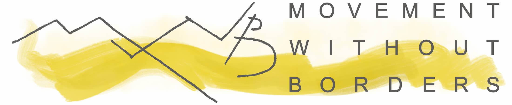
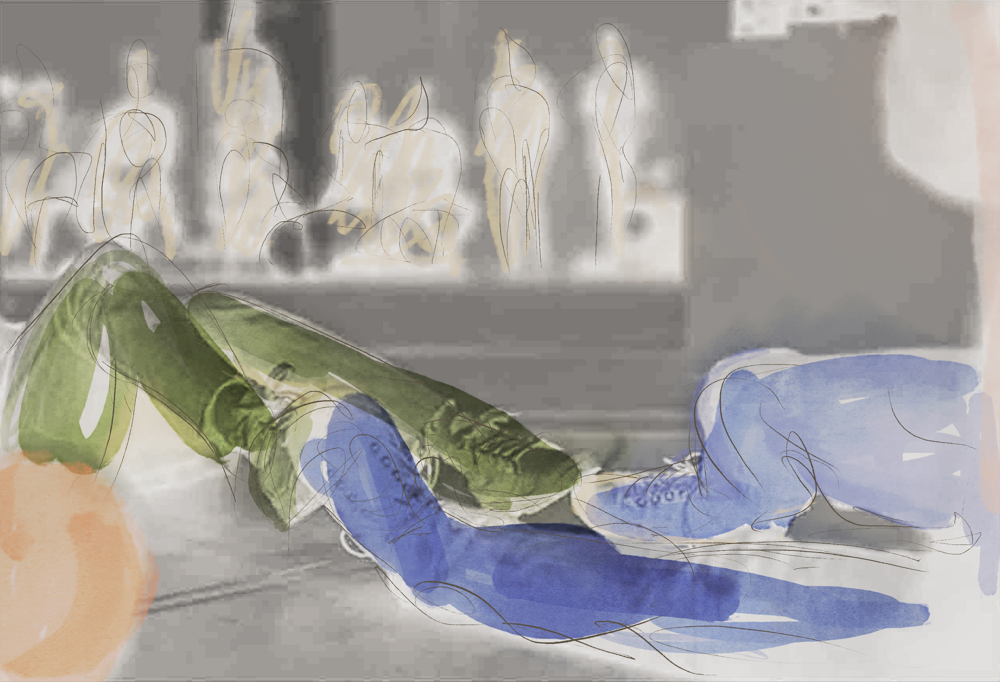

Founded and directed by dancemaker and curator Richard Colton, Movement Without Borders (MWB) brings together acclaimed artists, community organizations, advocates, scholars, and audiences around urgent social issues.
Through bold interdisciplinary projects, MWB fosters deep human connection, inspires empathy, and motivates meaningful change. MWB envisions a world in which justice and equity are shared societal values that require ongoing collective action. Together, through artistic inquiry and activism, MWB explores the root causes of social injustice and inspires compassionate and innovative solutions.
FEATURED PROJECT
Etudes for Rough Sleepers (Fall 2026)
An immersive, interdisciplinary performance exploring the crisis of homelessness in America.
Conceived and directed by David Michalek, with original music by Ted Hearne and movement by Hope Boykin, Etudes for Rough Sleepers, creatively produced by Richard Colton, brings together professional artists with individuals who have recently experienced homelessness. Together, they create a transformative work that deepens understanding, cultivates empathy, and inspires action.

Drawing inspiration, in part, from Rough Sleepers: Dr. Jim O’Connell’s Urgent Mission to Bring Healing to Homeless People by Pulitzer Prize-winning writer Tracy Kidder, Etudes for Rough Sleepers will premiere at Judson Memorial Church in New York City before touring nationally. Advisors Tracy Kidder and Dr. Jim O’Connell will contribute their expertise to the project.
What makes Etudes for Rough Sleepers a uniquely Movement Without Borders production is its unflinching commitment to honoring the humanity of those too often pushed to society’s margins. Professional dancers and musicians stand shoulder to shoulder with participant — performers who have experienced homelessness, each one valued — and compensated — for their artistry and their story.
Over fifteen transformative weeks, the performance ensemble gathers in movement, vocal and storytelling workshops that rebuild trust in self and others, reclaiming space for creative expression, confidence and joy. Audiences are not distant spectators; they are drawn into an intimate, urgent encounter with lives and voices that demand to be seen and heard. Each performance ends around a shared meal and dialogue. The experience encourages us collectively on a path where art becomes action
Community Partners
Our community partners inform and guide Etudes for Rough Sleepers and extend the reach of our work, connecting us with unhoused neighbors through arts, advocacy, and mutual aid.
Current partners include: Interfaith Assembly on Homelessness and Housing, Broadway Community’s Life Skills Empowerment Program, Open Hearts Initiative, and Judson Memorial Church’s Radical Hope Mutual Aid Center.
Join Our Circle of Supporters
Movement Without Borders is grateful to its generous supporters for believing in this work:
To learn more and get involved, contact Richard Colton at rcolton5678@gmail.com or (978) 201-6234.
PAST PROJECT
Inaugural Event (2021)
On October 2, 2021, Movement Without Borders debuted with a daylong festival of spoken word, dance, film, music, and activism at Judson Memorial Church.
Praised by The New York Times as one of the ten best dance performance events of 2021, three dynamic New York and San Diego-based organizations that create support systems for those navigating the immigration system were celebrated, and featured internationally-acclaimed artists.